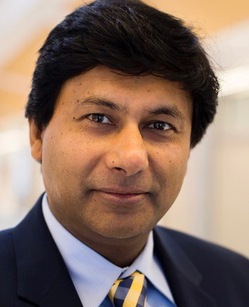

About MMRI

Amit Misra DirectorOur Story, Vision, & Values
MMRI's mission is to build the materials research ecosystem at the University of Michigan by catalyzing interdisciplinary research centers and infrastructure supported by federal agencies, industry, and foundations, with a vision to establish Michigan as a preeminent institution for engineered materials research.
MMRI launched as a pilot in AY19-20 under founding Director Professor Alan Taub. In 2023, Professor Amit Misra, former Chair of Materials Science and Engineering, was appointed Faculty Director, and Professor Max Shtein joined as Associate Director in AY23-24. MMRI reports to Associate Dean for Research Eric Michielssen, with funding from the College of Engineering and the Office of the Vice President for Research.
Strategic Priorities
Capabilities
Manage and operate world-class shared research user facilities, such as Michigan Center for Materials Characterization (MC)2.
Materials Research Ecosystem
Build an active network of collaborations among materials researchers across the university.
External Partnerships
Foster research partnerships with industries and national labs in materials research.
Incubator Grants
Fund faculty teams to incubate new UM-led centers of research excellence in emerging topical areas involving engineered materials.
MMRI History
The Beginning
MMRI is founded by Alan Taub.
New Research Center
$11M DOE center for next-gen battery technology.
New Leadership, Centers, & Funding
Amit Misra and Max Shtein become director and associate director of MMRI.
NSF provides $18M to advance materials research at U-M.
U-M to lead $30M complex-particle center.
$130M Electric Vehicle Center launches at U-Michigan.
Environmental Funding
Up to $11.5M for eco-friendly control over ice and snow.
3D Printing Metals
$10.3M to discover metal 3D-printed part longevity.
Workshops & Events
- MMRI regularly sponsors or co-sponsors campus workshops involving MMRI faculty affiliates, industry, and national labs. A recent example is provided below.
- Technical Interchange on Materials and Manufacturing for Extreme Environments — May 2024. Organizers: Kathleen Sevener, Chinedum Okwudire, Mirko Gamba.
- Click to view (MC)² specific events